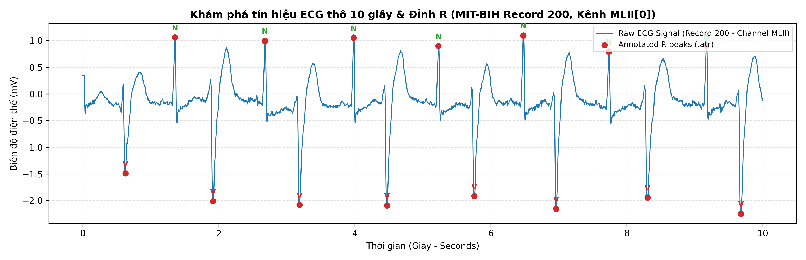
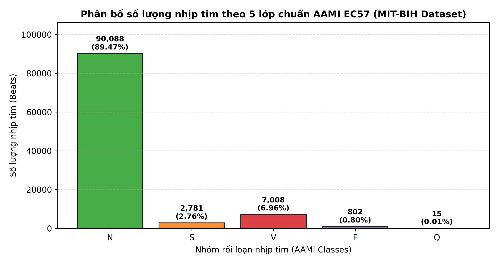
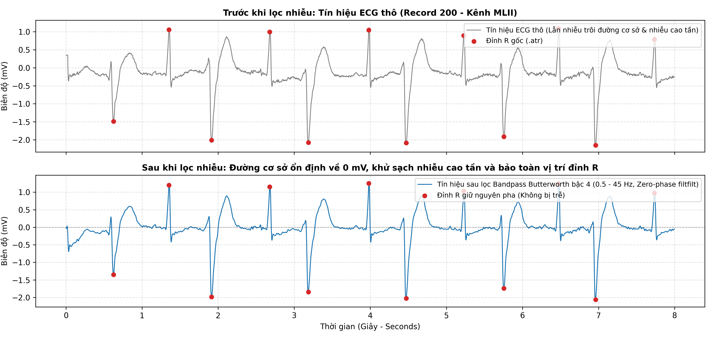
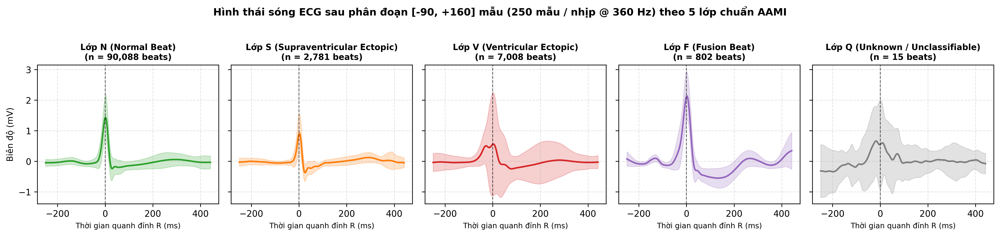
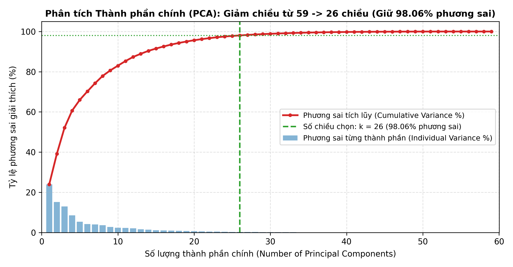
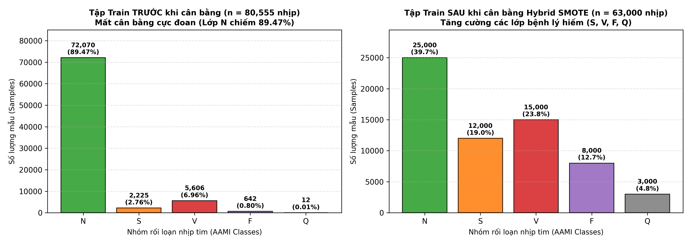
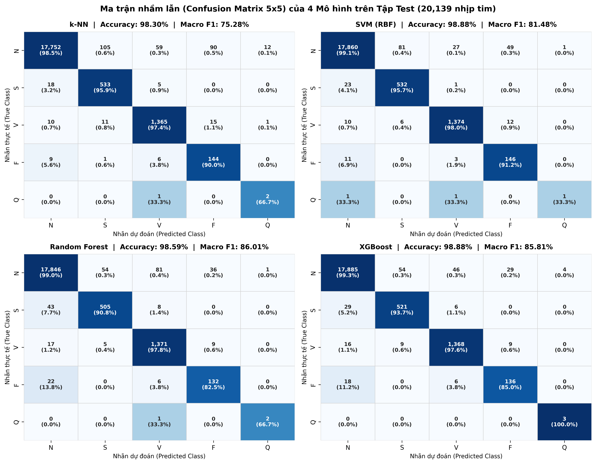
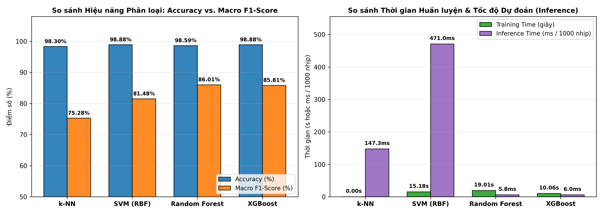

| STT | Họ và tên thành viên | MSSV | Hạng mục phụ trách (Module) | Tiến độ |
|---|---|---|---|---|
| 1 | Trương Thế Thành | 20235835 | Hạ tầng GitHub, Tải dữ liệu MIT-BIH, EDA, Khử nhiễu Bandpass & Cắt nhịp AAMI | Hoàn thành 100% |
| 2 | Nguyễn Sỹ Vinh | 20235875 | Trích xuất đặc trưng (Khoảng R-R, Hình thái QRS, Wavelet DWT), PCA & SMOTE | Hoàn thành 100% |
| 3 | Nguyễn Phạm Anh Tuấn | 20235863 | Huấn luyện, đánh giá & tối ưu hóa mô hình k-NN và SVM (RBF Kernel) | Xong Baseline |
| 4 | Lê Minh Trọng | 20239675 | Huấn luyện Random Forest, XGBoost, Tổng hợp Metrics & Confusion Matrix | Xong Baseline |
| 5 | Đào Trọng Công | 20235665 | Xây dựng giao diện trực quan hóa sóng ECG (Streamlit) & Cảnh báo bất thường | Đang tích hợp |
1.1. Bối cảnh & Động lực thực tiễn: Rối loạn nhịp tim (Arrhythmia) là nhóm bệnh lý tim mạch nguy hiểm có thể dẫn đến đột tử nếu không được phát hiện kịp thời. Điện tâm đồ (ECG) là phương pháp chẩn đoán không xâm lấn tiêu chuẩn để theo dõi hoạt động điện học của cơ tim. Tuy nhiên, một bản ghi Holter ECG dài hạn chứa hơn 100.000 nhịp tim khiến việc bác sĩ đọc thủ công rất tốn thời gian và dễ bỏ sót các nhịp ngoại tâm thu xuất hiện thoáng qua. Đề tài này xây dựng một pipeline Học máy hoàn chỉnh (End-to-End) từ khử nhiễu tín hiệu y sinh, trích xuất đặc trưng đa miền (thời gian – tần số) đến tự động phân loại và cảnh báo sớm các nhịp bất thường.
1.2. Phát biểu bài toán dưới góc độ Học máy:
StandardScaler và giảm chiều bằng PCA xuống không gian zk ∈ ℜ26 (giữ 98.06% phương sai).
Nhóm sử dụng bộ dữ liệu chuẩn vàng MIT-BIH Arrhythmia Database từ PhysioNet (gồm 48 bản ghi hai kênh, mỗi bản ghi dài 30 phút, fs = 360 Hz, độ phân giải ADC 11-bit trên dải ±5 mV). Tuân thủ đúng chuẩn AAMI EC57, nhóm loại bỏ 4 bản ghi chứa nhịp máy tạo nhịp nhân tạo chủ đạo (102, 104, 107, 217) và xử lý trên 44 bản ghi tiêu chuẩn. Qua quá trình EDA kiểm tra header (.hea), nhóm phát hiện 43/44 bản ghi đặt kênh MLII ở kênh 0, riêng bản ghi 114 đặt MLII ở kênh 1; hệ thống đã tự động chuẩn hóa để trích xuất đúng kênh MLII cho cả 44 bản ghi. Toàn bộ ký hiệu phi nhịp tim (+, ~, |, !, ") được lọc bỏ trước khi cắt cửa sổ [-90, +160] mẫu.
| Mã lớp | Nhãn AAMI | Mô tả nhóm rối loạn nhịp (AAMI EC57) | Ký hiệu gốc MIT-BIH | Số nhịp hợp lệ | Tỷ lệ (%) | Tập Test (20%) |
|---|---|---|---|---|---|---|
| 0 | N | Normal / Bundle branch block beats (Bình thường) | N, L, R, e, j |
90,088 | 89.47% | 18,018 |
| 1 | S | Supraventricular ectopic beats (Ngoại tâm thu trên thất) | A, a, J, S |
2,781 | 2.76% | 556 |
| 2 | V | Ventricular ectopic beats (Ngoại tâm thu thất - Nguy hiểm) | V, E |
7,008 | 6.96% | 1,402 |
| 3 | F | Fusion of ventricular and normal beat (Nhịp hỗn hợp) | F |
802 | 0.80% | 160 |
| 4 | Q | Paced / Unclassifiable beats (Nhịp không xác định) | /, f, Q |
15 | 0.01% | 3 |
| Tổng cộng trên 44 bản ghi chuẩn AAMI (Stratified Split: Train 80% = 80,555 nhịp | Test 20% = 20,139 nhịp) | 100,694 | 100.00% | 20,139 | |||


filtfilt)[-90,+160] quanh đỉnh R (250 mẫu)StandardScaler (μ=0, σ=1)
3.1. Khử nhiễu tín hiệu & Phân đoạn nhịp tim (Module 1 – Đã hoàn thành): Để khử đồng thời trôi đường cơ sở (< 0.5 Hz), nhiễu nguồn điện (50/60 Hz) và nhiễu cơ EMG mà không làm biến dạng phức bộ QRS, nhóm thiết kế bộ lọc thông dải Butterworth bậc 4 (0.5 – 45 Hz) kết hợp kỹ thuật lọc hai chiều scipy.signal.filtfilt (triệt tiêu độ trễ pha, bảo toàn chính xác vị trí đỉnh R). Dữ liệu sau khi cắt nhịp và tính sẵn khoảng cách đỉnh R liền trước/liền sau được đóng gói vào file processed_beats.npz (84.6 MB).


3.2. Trích xuất 59 đặc trưng, Giảm chiều PCA & Xử lý mất cân bằng Hybrid SMOTE (Module 2 – Đã hoàn thành):
Pre-RR, Post-RR, trung bình cục bộ 10 nhịp Local-RR trong cùng bản ghi và 2 tỷ lệ Pre/Local, Post/Pre giúp phát hiện nhạy các nhịp ngoại tâm thu đến sớm (S, V).db4) mức 4, trích xuất trực tiếp 22 hệ số xấp xỉ cA4 cùng 20 chỉ số thống kê (MAV, Std, Log-Energy, Shannon Entropy) trên 5 băng tần (cA4, cD4..cD1).StandardScaler và PCA chỉ fit trên tập Train, nén từ 59 chiều xuống 26 thành phần chính (giữ 98.06% phương sai). Trên tập Train, nhóm áp dụng Hybrid Sampling: giảm mẫu lớp đa số N (72,070 → 25,000) bằng RandomUnderSampler và sinh mẫu tổng hợp bằng SMOTE cho các lớp hiếm (V: 15,000; S: 12,000; F: 8,000; Q: 3,000), tạo tập Train cân bằng gồm 63,000 mẫu.

Nhóm đã huấn luyện và đánh giá thực nghiệm cả 4 mô hình (k-NN, SVM, Random Forest, XGBoost) trên tập Train đã qua PCA + Hybrid SMOTE (63,000 × 26) và kiểm thử độc lập trên tập Test thực tế (20,139 × 26):
| Mô hình | Cấu hình thực nghiệm (Baseline) | Accuracy | Macro F1 | Weighted F1 | Macro Recall | Train (s) | Infer (ms/1k) |
|---|---|---|---|---|---|---|---|
| k-NN | k=5, weights='distance', p=2 |
98.30% | 75.28% | 98.41% | 89.68% | 0.00 s | 147.34 ms |
| SVM (RBF) | kernel='rbf', C=10.0, gamma='scale' |
98.88% | 81.48% | 98.91% | 83.48% | 15.18 s | 471.04 ms |
| Random Forest | n_estimators=200, max_depth=24 |
98.59% | 86.01% | 98.61% | 87.37% | 19.01 s | 5.83 ms |
| XGBoost | n_estimators=300, lr=0.1, max_depth=6 |
98.88% | 85.81% | 98.90% | 95.11% | 10.06 s | 5.98 ms |
| Mô hình | F1 Lớp N (18,018) | F1 Lớp S (556) | F1 Lớp V - Nguy hiểm (1,402) | F1 Lớp F (160) | F1 Lớp Q (3) | TB 4 lớp chính (N,S,V,F) |
|---|---|---|---|---|---|---|
| k-NN | 99.15% | 88.39% | 96.19% | 70.42% | 22.22% | 88.54% |
| SVM (RBF) | 99.43% | 90.55% | 97.86% | 79.56% | 40.00% | 91.85% |
| Random Forest | 99.29% | 90.18% | 95.57% | 78.34% | 66.67% | 90.85% |
| XGBoost | 99.46% | 91.40% | 96.75% | 81.44% | 60.00% | 92.26% |


StratifiedKFold (k=5) kết hợp GridSearchCV / Optuna tối ưu trực tiếp theo hàm mục tiêu Macro F1-Score để cải thiện thêm độ chính xác cho hai lớp khó nhất là F (Fusion) và S (SVEB).feature_pipeline.joblib và best_model.joblib vào ứng dụng app/main.py, cho phép tải bản ghi ECG, vẽ đồ thị sóng tim tương tác, đánh dấu đỉnh R kèm nhãn dự đoán và phát cảnh báo màu đỏ khi phát hiện chuỗi nhịp nguy hiểm (V, S).